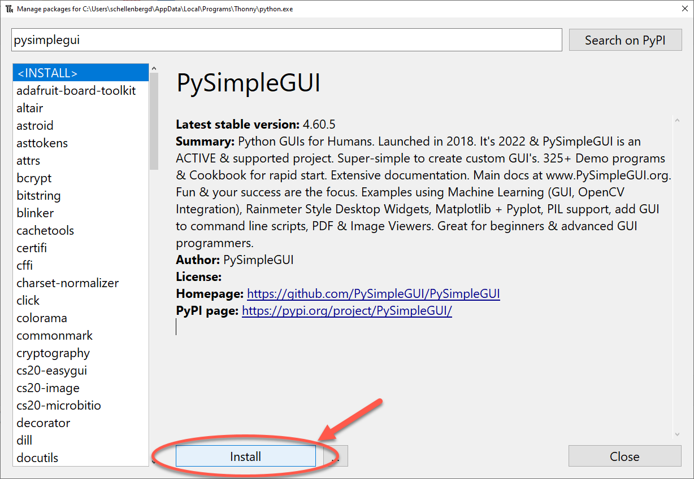

6. Other Input Methods (PySimpleGUI)¶
Quick Overview of Day
Getting user input with a pop-up window using the PySimpleGUI module. Work on a Python assignment, focused on input/output of strings, and conditionals.
CS20-CP1 Apply various problem-solving strategies to solve programming problems throughout Computer Science 20.
CS20-FP1 Utilize different data types, including integer, floating point, Boolean and string, to solve programming problems.
CS20-FP2 Investigate how control structures affect program flow.
CS20-FP4 Investigate one-dimensional arrays and their applications.
6.1. What Does This Program Do?¶
Note
Your teacher may choose to use the following examples as a class activity, by displaying the examples, and having you take a guess as to what you think each will do before running the code.
What will the following programs output? Why?
Remember that a single equal sign = is used to assign a value. Two equal signs == are used when comparing a value.
Try the following code with x = 42, x = 32, x = 2, x = 82, and x = 142.
Try the following, entering in 17. How about 14? Can you fix it? Hint: think data types!
6.2. Getting User Input With PySimpleGUI¶
One of the great things about Thonny is how easy it is to add additional modules to the standard Python installation. You can think of a module as being similar to the library tab that we used in Reeborg. It gives us the ability to use extra functionality that another programmer has created. When we were programming Reeborg, we would often put functions into the library tab, like this:

In Reeborg, we would often import that code using from library import turn_right, so that we could simply call the turn_right() function in the same way that we could call turn_left(). However, it was also possible to import the library as follows:

You can think of this code as saying “Look into the library, and find something called turn_right()”. For many Python modules, this is equivalent to saying, “Look into the library.py file, and find a function called turn_right()”.
Another method of importing the library allows us give the module a nickname that is faster to type. Consider the following:

When using Python outside Reeborg, if you’d like to get user input through a graphical pop-up box instead of just through the console, we can just install a module PySimpleGUI. In Thonny, open Tools → Manage packages….
Now type in PySimpleGUI into the Search box (be sure to spell it correctly). Click the package PySimpleGUI from the list of modules.
Now click the Install button.
Once the installation has completed, close the Manage Packages window.
6.2.1. Get String From User¶
You will now be able to use the PySimpleGUI module in the same way you can use any other module. Here is a simple program that will use pop-up boxes to get the first and last names of the user, then print out the result to the console.
# import the module to allow GUI interaction
import PySimpleGUI as sg
# think of this as "look inside PySimpleGUI, and run the popup_get_text function
first_name = sg.popup_get_text("Please enter your first name")
last_name = sg.popup_get_text("Please enter your last name")
greeting = "Hello there, " + first_name + " " + last_name + "!"
print(greeting)
6.2.2. Display Graphical Messages¶
If you would like to output the message to a graphical window (instead of the console), you can call the show_message() function, as shown below.
# import the module to allow GUI interaction
import PySimpleGUI as sg
# think of this as "look inside PySimpleGUI, and run the popup_get_text function
first_name = sg.popup_get_text("Please enter your first name")
last_name = sg.popup_get_text("Please enter your last name")
greeting = "Hello there, " + first_name + " " + last_name + "!"
# can also display output graphically
sg.popup(greeting)
6.2.3. Other Methods¶
There are many more methods you can use with PySimpleGUI, including designing full GUI applications. You may want to look in the appendices of this textbook for the PySimpleGUI Reference for a more comprehensive list of what is available.
6.3. Mad Libs Practice Problem¶
You can either work directly in the textbook, or using Thonny. Either way, be sure to save your solution into your Computer Science 20 folder when you finish for the day! If you work in Thonny, you will be able to use easygui_qt in your program.
To practice input/output in Python, you will make two Mad Libs. At the start of the program, you should ask the user which MadLib they want. Once the user has selected a MadLib, your program should take in input from the user, then use that input when outputting a story or poem.
If you are not familiar with madlibs, you may want to investigate what they are by searching the web for a “madlibs website”. In essence, you want to take a familiar story and make it funny by randomly placing your users words into the story. For example, you might start with the classic Humpty Dumpty rhyme:
Humpty Dumpty sat on a wall,
Humpty Dumpty had a great fall.
All the king's horses and all the king's men
Couldn't put Humpty together again.
In your program, you could take user input:
Person's First Name: Bree
Person's Last Name: Janzen
Verb (past tense action): ran
Job Title (such as principal, electrician, etc.): plumber
Animal (plural): dogs
After processing the user input, your program could print out:
Bree Janzen ran on a wall,
Bree Janzen had a great fall.
All the plumber's dogs and all the plumber's men
Couldn't put Bree together again.
Both of your madlibs should take in at least 5 words from the user, but no more than 10. Feel free to use any old school rhyme, or something of your own creation. Though it can be difficult with user input, try to make sure your story makes sense.
Remember to use a comment header at the top of your program!
6.3.1. Extra for Experts¶
instead of having the user enter in all of the parts of speech, have the computer choose some of the words at random. You can do this in one of two ways:
easier: create a list of possible words, and have Python choose one of these words at random.
harder: create text files for each of the parts of speech that you will require (ie. nouns.txt, adjectives.txt, etc) and have the computer randomly choose one of the words from the appropriate text file to complete the madlib. Hint: To simplify things, I’d recommend that you generate the text file with one word per line.